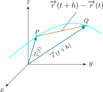
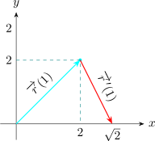

4.11 Derivatives and Integrals of Vector Functions
Let \(\overline {r}\) be a vector function. Then the derivatives denoted by \(\overline {r}'(t)\) of a vector function \(\overline {r}(t)\) is defined as \[\frac {d\overrightarrow {r}}{dt} = \overline {r}'(t) = \lim \limits _{h \rightarrow 0} \hspace {0.1cm}\frac {\overrightarrow {r}(t + h) - \overrightarrow {r}(t)}{h}\] If the limit exists.
Consider the diagram

\(\displaystyle {\overrightarrow {r}'(t) = \lim \limits _{h \rightarrow 0}\hspace {0.1cm} \frac {\overrightarrow {r}(t + h) - \overrightarrow {r}(t)}{h}}\) is called the tangent vector at \(P\). The tangent line to \(c\) at \(P\) is defined to be the line through \(P\) parallel to the tangent vector \(\overrightarrow {r}'(t)\).
The unit tangent vector \(\displaystyle {\overrightarrow {T}(t) = \frac {\overrightarrow {r}(t)}{\left |\overline {r}(t)\right | }}\)
Let \(\overline {r}(t) = f(t)\textbf {i} + g(t)\textbf {j} + h(t)\textbf {k}\) where \(f, g\) and \(h\) are differentiable functions of \(t\). \[\overline {r}'(t) = \big \langle f'(t) , g'(t) , h'(t)\big \rangle = f'(t)\textbf {i} + g'(t)\textbf {j} + h'(t)\textbf {k}\]
- 1.
- Find the derivative of \(\overline {r}(t) = (1 + t^3)\textbf {i} +\displaystyle { te^{-t}\textbf {j}} + \sin 2t \textbf {k}\)
- 2.
- Find the unit tangent vector at the point where \(t = 0\).
Solution.
- 1.
- \(\displaystyle {\overline {r}'(t) = 3t^2\textbf {i} + (1-t)e^{-t}\textbf {j} + 2\cos 2t \textbf {k}}\)
- 2.
- At the point \(t = 0\) we get the coordinate \((1,0,0)\)
\[\displaystyle {\overrightarrow {T}(0) = \frac {\overline {r}(0)}{\left |\overline {r}(0)\right | }}\]
Now \(\overline {r}'(0) = \textbf {j} + 2\textbf {k}\hspace {0.3cm}, \hspace {0.3cm} \left |\overline {r}(0)\right | = \sqrt {1^2 + 2^2} = \sqrt {5}\)
\[\overrightarrow {T}(0) = \frac {1}{\sqrt {5}}\textbf {j} + \frac {2}{\sqrt {5}}\textbf {k}\]
For the curve \(\overline {r}(t) = \sqrt {t}\textbf {i} + (2 - t)\textbf {j}\). Find \(\overline {r}'(t)\) and sketch the position vector \(\overrightarrow {r}'(1)\) and the tangent vector \(\overrightarrow {r}'(1)\).
Solution. \[\overline {r}(t) = \frac {1}{2\sqrt {t}}\textbf {i} - \textbf {j}\hspace {0.2cm} , \hspace {0.2cm} \overrightarrow {r}'(1) = \frac {1}{2}\textbf {i} - \textbf {j}\] \[x = \sqrt {t} \hspace {0.2cm} , \hspace {0.2cm} y = 2 -t \hspace {0.2cm} , \hspace {0.2cm} y = 2 - x^2\]

The magnitude of the tangent vector \(\dfrac {d\overline {r}}{dt}\) is given by \[\left |\dfrac {d\overline {r}}{dt}\right | = \sqrt {\Bigg (\dfrac {dx}{dt}\Bigg )^2 + \Bigg (\dfrac {dy}{dt}\Bigg )^2 + \Bigg (\dfrac {dz}{dt}\Bigg )^2}\] from the formula \[S(t) = \int ^t_{t_0} \sqrt {\Bigg (\dfrac {dx}{dt}\Bigg )^2 + \Bigg (\dfrac {dy}{dt}\Bigg )^2 + \Bigg (\dfrac {dz}{dt}\Bigg )^2}\]
We obtain \(\dfrac {d S}{d t} = \left |\dfrac {d \overline {r}}{d t}\right |\).
Questions on this section
Stuck on something here? Ask below and it stays attached to this topic.